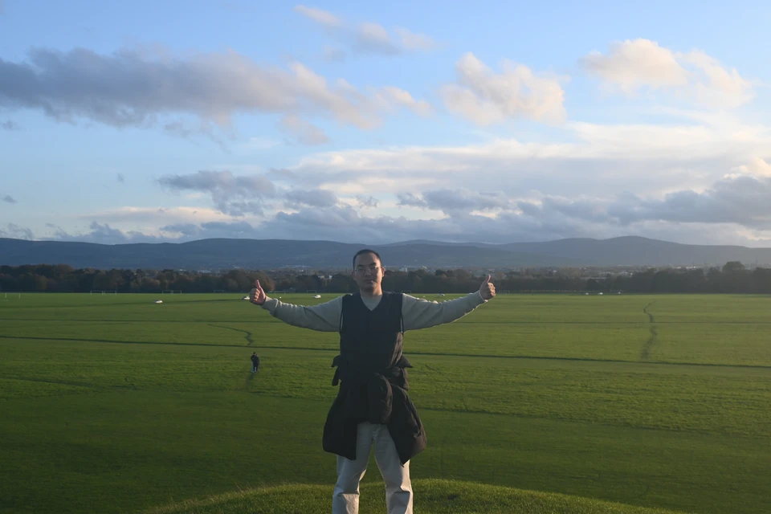

Hongchen Wei 魏红陈
I am a Ph.D. student at Wuhan University, advised by Prof. Zhenzhong Chen in the IIP Lab.
I am also a research intern in the Visual Computing Group at Microsoft Research Asia, working with Dr. Bei Liu on environments and learning for professional-work agents.
My research focuses on generalist agents for professional work: generative environments, data synthesis, post-training, and evaluation. Recent work includes OfficeTown on organizational simulation, DocAtlas on document interaction, and XL-DocBench on evidence-grounded evaluation.
I expect to complete my Ph.D. in June 2027 and am seeking full-time research positions in agentic AI. Please feel free to reach out about potential opportunities.
Email Scholar GitHub CV (EN) CV (中)
Office Intelligence
News
- Completed OfficeTown: ongoing organizational simulation generates professional-work data and environments for training and evaluating generalist agents (not yet public).
- DocAtlas and XL-DocBench accepted to NeurIPS 2026.
- Joined Microsoft Research Asia as a research intern, working with Dr. Bei Liu.
Publications
18 papers · 11 first-author works (including preprints)No matching publications.
Education & Experience
-
Microsoft Research AsiaResearch intern · Visual Computing Group · Mentor: Dr. Bei Liu2025.12 – Present
-
Wuhan UniversityPh.D. student · IIP Lab · Advisor: Prof. Zhenzhong Chen2023.09 – 2027.06
-
Nanjing University of Science and TechnologyMaster's degree2020.09 – 2023.04
-
Xi'an Shiyou UniversityBachelor's degree2016.09 – 2020.06
Academic Service
Reviewer for ICLR 2025/26, CVPR 2025/26, NeurIPS 2025/26, ICML 2026, and TNNLS.